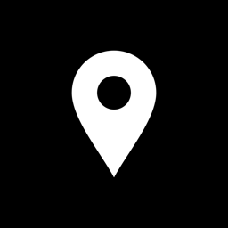

Mis UbicacionesCondiciones de uso y aviso legal
Última actualización: 17 de octubre de 2026
1. Titular
La app Mis Ubicaciones y esta web son de Jairo Sánchez, que las ofrece gratis, sin publicidad ni compras y sin actividad comercial. Contacto: jairosanchezb5@gmail.com.
2. Licencia de uso
Si descargas la app del App Store, se te concede según el contrato de licencia de usuario final estándar de Apple, junto con estas condiciones. La versión para Android, que no está en Google Play, se ofrece gratis y tal cual.
3. Para qué sirve y cómo usarla con seguridad
- Mis Ubicaciones guarda sitios y los abre en tu app de mapas. No es un navegador y no guía la conducción.
- No la manejes mientras conduces. Respeta siempre las normas de tráfico y la señalización.
- Las coordenadas, direcciones, distancias y direcciones de las flechas dependen del GPS, de la brújula del dispositivo y de servicios de terceros, y pueden no ser exactas. Compruébalas antes de fiarte de ellas.
4. Tus datos y tus copias
Tus sitios solo están en tu dispositivo: el titular no tiene acceso a ellos y no puede recuperarlos. Si borras la app o pierdes el dispositivo sin haber exportado una copia, se pierden. Exportar y guardar copias es cosa tuya. Más detalles en la política de privacidad.
5. Garantía y responsabilidad
La app se ofrece gratis y tal cual, sin garantía de que funcione siempre ni sin errores. En la medida en que lo permita la ley, el titular no responde de los daños que pueda causar su uso, como la pérdida de sitios o una ubicación equivocada. Nada de esto limita los derechos que te reconozca la normativa de consumidores aplicable.
6. Propiedad intelectual y marcas
El nombre, el icono, el diseño y el código propio de la app son del titular. Incluye componentes de código abierto que se usan según sus licencias. Apple Maps, Google Maps, Waze, iPhone y Siri son marcas de sus respectivos dueños; Mis Ubicaciones no está afiliada a ellos ni cuenta con su respaldo.
7. Cambios
Estas condiciones pueden cambiar con nuevas versiones de la app. La versión vigente es la publicada en esta página, con su fecha.
8. Ley aplicable
Se rigen por la ley española, sin perjuicio de las normas que te protejan como consumidor en tu país de residencia.